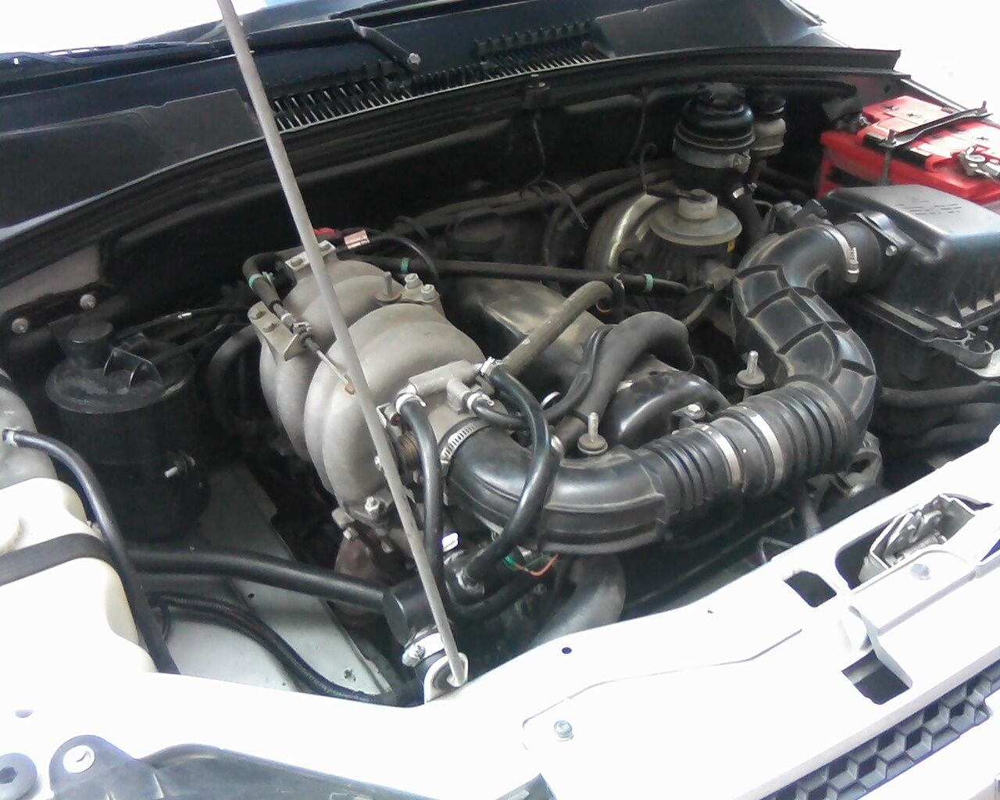

LADA Niva Travel (также ранее обозначавшийся как ВАЗ-2123, Chevrolet Niva и LADA Niva, разг. «Ше́ви-Нива, Шнива») — российский автомобиль повышенной проходимости ВАЗ. Представляет собой второе поколение автомобилей повышенной проходимости Волжского автомобильного завода и является «преемником» модели ВАЗ-2121 «Нива». Имеет постоянный полный привод на четыре колеса, двухступенчатую раздаточную коробку и межосевой блокируемый дифференциал.
На предсерийном этапе в 1998—2002 гг. модель выпускалась на ОПП по обходным технологиям под обозначением ВАЗ-2123 «Нива».
В 2002—2020 гг. модель находилась во владении СП «GM-АВТОВАЗ» и производилась под брендом Chevrolet, называясь Chevrolet Niva.
В декабре 2019 года АвтоВАЗ выкупил долю General Motors в совместном предприятии, и с июля по декабрь 2020 года модель продавалась как LADA Niva.
В декабре 2020 года рестайлинговая версия автомобиля получила имя LADA Niva Travel (англ. travel — путешествие).
Работы по созданию следующего, второго поколения автомобилей повышенной проходимости ВАЗ начал в начале 1980-х годов, которые продолжались до конца 1990-х годов. В связи с этим на этапе разработки внешность опытных образцов постоянно менялась. Внешность самого первого макета кузова 1980 года перекликалась с внешностью кузова будущей модели ЗАЗ-1102 «Таврия». Следующий вариант 1987 г. был явно схож с будущей моделью: ВАЗ-2111 (впоследствии данная заготовка получила развитие — она была взята за основу при создании кузова модели УАЗ-3160 (которая в итоге «переросла» в УАЗ-3163 «Patriot»)). Макет почти окончательного варианта 1992 года был выполнен в едином стиле с будущей моделью ВАЗ-1117 «Калина». В 1993 году был готов окончательный вариант кузова модели ВАЗ-2123, после чего началось создание других типов кузовов: «пикап» и «фургон» — таким образом, вместо одной модели появлялось семейство моделей. Приблизительно к 1996 году опытные образцы стали ходовыми — то есть, обрели техническую часть. По определённым причинам данное поколение АПП ВАЗ не получило современного двигателя нового поколения — которым также комплектовалось родственное ему семейство моделей «Лада Калина», и оснащалось не соответствующим современным нагрузкам и нормам двигателем предыдущего — от модели ВАЗ-2121, что стало причиной плохих тяговых и динамических показателей. ВАЗ-2123 проходила проверку в разных погодных, дорожных и климатических условиях, опытный образец серии 100 испытывался в Узбекистане в 1996 году. В 1998 году на Московском международном автосалоне был представлен концепт новой модели: ВАЗ-2123 «Лада Нива».
Мелкосерийная пробная сборка ВАЗ-2123 по обходным технологиям была начата на опытно-промышленном производстве АвтоВАЗа (также как производство УПВ — модели ВАЗ-2120) в 2001 году. Но последствия кризиса 1998 года не позволяли заводу запустить модель в серию. В 2002 году для налаживания серийного производства модели было заключено соглашение с американской компанией «General Motors» и создано совместное предприятие «GM-АВТОВАЗ»: лицензия на модель ВАЗ-2123 и права на бренд «Niva» («Нива») передавались совместному предприятию (при этом первое поколение «Нив» с 2006 года стало именоваться: «4×4», а типы кузовов «пикап» и «фургон» в серийное производство не попали).
В 2002—2003 годах «GM-АвтоВАЗ» строит в Тольятти цеха для окраски кузовов и сборки автомобилей.
В начале 2000-х годов стоимость Chevrolet Niva превышала цену классического ВАЗ-2121 вдвое, являясь прямым конкурентом выпускавшегося тогда в Калининграде Kia Sportage первого поколения.
В 2017 году автомобиль начали собирать в Казахстане (город Костанай) методом крупноузловой сборки на предприятии «СарыаркаАвтоПром».
Концепт-кар Chevrolet Niva второго поколения на Московском автосалоне — 2014
В 2012 году дочерней компанией GM-АВТОВАЗ ООО «Джей Ви Системз» на территории Особой экономической зоны Тольятти было начато строительство второй площадки завода по выпуску внедорожника Chevrolet NIVA нового поколения, однако из-за международных санкций через год объект был заморожен. К середине 2019 года строительство все ещё не закончено, в том числе в связи с судебными тяжбами по поводу строительства.
Начало выпуска Шевроле Нива второго поколения планировалось в 2016 году. Стоимость проектирования модели оценивается в 200 млн долларов, а инвестиции в организацию производства новой модели — в 4 млрд рублей. Выпуск предполагался в объёме до 120 тысяч машин в год.
Штамповку и сварку кузова нового поколения планировалось осуществлять в новом, специально для этого возведённом цехе. Двигатель планировался 135-сильный, разработки PSA Peugeot Citroën, КПП и раздаточная коробка — из Индии и Италии.
Концепт новой Шевроле Нива был продемонстрирован в августе 2014 года, однако в марте 2015 года разработка модели была приостановлена.
В 2019 году АвтоВАЗ выкупил у концерна General Motors 50-процентную долю в совместном предприятии GM-АвтоВАЗ и вернул все права на товарные знаки «Нива» и «Niva». Некоторое время автомобиль продолжал выпускаться под именем Chevrolet Niva, после чего получил новое название под маркой LADA.
Предсерийный этап: ВАЗ-2123, 2323, 2723 (1998 год)
ВАЗ-2323
Многие узлы и агрегаты ВАЗ-2123 были позаимствованы от предыдущего поколения «Нивы» ВАЗ-21213/21214. Двигатель ВАЗ-2123 представлял собой дальнейшее развитие инжекторного мотора ВАЗ-21214 с адаптацией под новый моторный отсек. Также были выпущены модификации с карбюраторными двигателями и с инжекторным двигателем объёмом 2 литра Opel с оригинальной трансмиссией. В результате более плотной компоновки моторного отсека запасное колесо было навешено на заднюю дверь, что, кстати, более соответствовало моде в сегменте SUV. В рулевом управлении применялся электроусилитель производства махачкалинского завода «АвиаАгрегат», аналогичный автомобилю Lada Kalina. Также завод использовал на первых автомобилях систему распределенного впрыска компании Элкар (Январь), являющегося аппаратным клоном системы Bosch Motronic. Передний и задний карданные валы унифицированы (аналогичны короткобазной LADA 4×4), промежуточный вал удлинен. Изменено крепление раздаточной коробки (появилась третья опора), рычаг блокировки межосевого дифференциала совмещен с рычагом переключения демультипликатора (т. н. однорычажная схема «раздатки»). Редуктор переднего моста отделен от двигателя. Точки крепления задних амортизаторов смещены ближе к колесам и установлены вертикально. Нижние тяги заднего моста образуют теперь параллелограмм, что уменьшает подруливание заднего моста. Спереди, в отличие от Шевроле Нивы, имеются две буксировочные проушины. Некоторые модели комплектовались рулем со встроенной подушкой безопасности. Также инженеры ВАЗ разработали электрическую систему корректора фар вместо гидравлической и впервые применили её на данной модели. Впоследствии эта система перешла на автомобили Lada 2110, Lada Priora, Lada Kalina.
Семейство кузовов кроме базового пятидверного универсала также предусматривало пикап ВАЗ-2323 и фургон ВАЗ-2723, не пошедшие в серию. Главный конструктор проекта — Валерий Иванович Доманский.
Первая серия: «Chevrolet Niva» (2002 год)
Niva выпускалась в двух основных комплектациях: L и GLS. Исполнение GLS по комплектации превосходит исполнение L из-за отделки салона искусственной кожей, литых 16-дюймовых дисков колёс, аудиоподготовки, алюминиевого кронштейна запасного колеса, который позволял запасное колесо вешать «лицом», изотермических тонированных стёкол, противотуманных фар, обогрева передних сидений и т. д.
Существуют также варианты комплектации LC и GLC, соответственно, аналогичные комплектациям L и GLS, но оснащаемые кондиционером.
Все без исключения комплектации включают в себя аудиоподготовку и электроуправление наружными зеркалами (начиная с 2004 года), подогрев наружных зеркал (начиная с 2004 года).
При доводке автомобиля до конвейера компания General Motors отказалась от электроусилителя руля ввиду низкого качества, сбоев в работе системы и проблем с поставками и заменила его на систему гидравлического усиления руля, с привлечением компании ZF и компании Bosch, которая локализовала свое производство, основав завод «Рулевые системы» в Тольятти (впоследствии насосами этого предприятия оснастили Ниву первого поколения, а также Lada 110).
General Motors преследовала цель заменить все ненадежные узлы проекта 2123, но не путём импорта, а путем локализации производства запчастей у поставщиков АвтоВАЗ, учитывая опыт, полученный при запуске производства крупноузловой сборки автомобиля Chevrolet Blazer. Впоследствии система впрыска Январь была заменена на систему Bosch Motronic. Комбинация приборов производилась фирмой VDO (вместо традиционного поставщика — владимирского завода «Автопродукт». Также был изменён каркас сидений, он приобрёл более надёжную конструкцию — в отличие от 2123, на которой ставились сиденья от автомобиля Lada 110. Также изменена система вентиляции кузова, добавлен салонный фильтр. Автомобиль начал оснащаться системой кондиционирования и рециркуляции салона, а также электрообогревом и регулировкой зеркал заднего вида. В проекте 2123 данные регулировки предусматривались только механическими. Были проведены работы и по проводке автомобиля, он получил систему центрального замка и сигнализации, как в автомобиле Lada Kalina, и иммобилайзер, хотя принципиально проводка автомобиля осталась от Lada 110.
На автомобилях первых годов выпуска использовался бензиновый 4-цилиндровый рядный двигатель ВАЗ 21214 объёмом 1,7 л. с распределённым впрыском топлива мощностью 79,5 л. с. (58,5 кВт) с максимальным крутящим моментом 128 Нм. Но, в отличие от мотора для Нивы первого поколения, поршневая группа для сборки поставлялась не заводом ВАЗ, а поставщиком GM, и требования к мотору были более высокими, хоть и собирались на общей линии сборки двигателей АвтоВАЗ. Впоследствии двигатель был модифицирован для данной модели и получил свой индекс 2123. На нем был установлен иной кронштейн навесных агрегатов с переносом масляного фильтра, генератор повышенной мощности на 90А с верхним расположением для лучшей защиты от попадания воды и грязи. Мотор оснастили гидронатяжителем цепи и гидрокомпенсаторами для повышения надёжности конструкции. Впоследствии все эти модификации частично распространились на Ниву первого поколения.
Шевроле-Нива, инжекторный двигатель ВАЗ-2123 с рабочим объёмом 1,7 литра

Подкапотное пространство Chevrolet Niva
Подкапотное пространство Chevrolet Niva FAM-1
Первая партия автомобилей Chevrolet Niva FAM-1 была выпущена весной 2006 года, производство началось с ноября 2006 года. Автомобиль получил индекс ВАЗ-21236 и выпускался в единственной комплектации GLX. Автомобиль оснащался двигателем Opel Z18XE (1,8 л, 122 л. с.) и 5-ступенчатой механической коробкой передач Aisin AG5, агрегатированной с раздаточной коробкой от Нивы в моноблочный корпус. Двигатель Opel Z18XE был выбран в связи с началом производства на GM-Автоваз, автомобиля Chevrolet Viva. После увеличения крутящего момента и замены коробки передач, потребовалось изменить передаточные числа повышающего и понижающего ряда, а также кронштейны крепления к кузову и подушки моноблочной конструкции. Так же потребовалось изменить картер раздаточной коробки и подшипники скольжения. Новый картер раздаточной коробки стали производить на Заволжском моторном заводе, а не в Тольятти на ВАЗе. Кузов не претерпел сильных изменений в конструкции относительно базовой модели. Однако вся трансмиссионная часть автомобиля была заменена, кроме переднего и заднего моста. Так же изменились длина карданных валов.
Данная модификация комплектовалась:
Все эти изменения позволили автомобилю набрать прочности, и добавить комфорта для водителя. Также немалое внимание уделено безопасности водителя. Автомобиль не получил широкого распространения ввиду, достаточно высокой цены относительно базовой модели. Цена в 2007 году начиналась с 21000$ в комплектации FAM-1, базовая модель комплектации L стоила 13000$. Большинство наработок по проекту FAM-1 было использовано при рестайлинге модели в 2009 году. Владельцы данных модификаций в целом отмечают более высокую надежность, меньший расход топлива, меньший вибрационный шум трансмиссии и более высокие скоростные и тяговые характеристики модели.
В конце апреля 2008 года была снята с производства модификация автомобиля GLX или FAM-1 (Chevrolet Niva FAM-1). За два года было сделано и продано всего около тысячи Chevrolet Niva FAM-1.
Существует тюнинговая модификация «Трофи» (Chevrolet Niva Trophy), адаптированная к использованию на бездорожье. В число основных отличий от базовой комплектации входят:
Оформление деталей от фирмы «Бертоне» (2009 год)
Рестайлинг модели произошёл в 2009 году, разработкой занималось дизайн-ателье Stile Bertone. Её задачей было освежить модель в стиле автомобилей GM. Автомобиль получил линзованный ближний свет, иную конструкцию светотехники, внедорожный обвес, защищающий кузовные элементы на бездорожье, а также новую конструкцию потолка в салоне с плафоном от GM, руль устанавливался компании TRW, аналогичный Opel Corsa по дизайну, но с ВАЗовской шлицевой для монтажа на рулевой вал, карданные валы со шрусовым соединением, изменение конструкции подшипников и сальников раздаточной коробки, и иную форму центрального тоннеля в салоне.
Автомобиль Chevrolet NIVA выпускается в 5 комплектациях: L, LC, LE, GL, GLC.
В мае 2015 года линейка комплектаций модели пополнилась версией LE+, созданной на основе версии GLC. Автомобиль получил кондиционер, полный пакет безопасности, шины Continental Cross Contact с дисками К&К «Камелот», а также защиту заднего бампера с тягово-прицепным устройством и некрашеные молдинги.
С 12 октября 2015 года все автомобили оснащаются модернизированными моторами стандарта «Евро-5».
Рестайлинговая Chevrolet Niva, комплектация L/LC, вид сзади
Панель приборов рестайлингового автомобиля
Модель, выпускавшаяся с июля 2020 по апрель 2021 года
Автомобиль получил базовые изменения по платформе и стал унифицирован с Lada Niva Urban. Изменилась конструкция переднего ступичного узла. Но большинство изменений осталось косметическим, в связи с выходом General Motors из состава СП использование их торговой марки более невозможно. Поэтому АвтоВАЗ по контракту убрал все упоминания GM, но не отказался от части поставщиков.
АвтоВАЗ начал устанавливать систему Эра-ГЛОНАСС. В базовую комплектацию добавлена подушка безопасности водителя по требованиям законодательства для получения ОТТС.
Также в 2020 году на основе комплектации LE появилась модификация под названием Off Road. Особенностью данной комплектации являются:
На выставке «Армия-2021»
21 декабря 2020 года стало известно, внешний вид данной модели был изменён, а также модель получила название Lada Niva Travel. Автомобиль получил новую переднюю часть, новый задний бампер и молдинги, а также задние светодиодные фонари. По технической части изменений не произошло. Продажи новой модели стартовали в феврале 2021 года.
В марте 2021 года АвтоВАЗ объявил о завершении выпуска старой (дорестайлинговой) «Нивы», оставив на конвейере только Niva Travel.
В августе 2021 года производство Niva Travel было перенесено с завода «Лада Запад Тольятти» на линию сборки Lada Niva Legend.
|
• Допустимая полная масса буксируемого прицепа, кг: |
|
|
прицеп с тормозами |
— 1200 |
|
прицеп без тормозов |
— 600 |
|
• Радиус поворота, м |
— 5,7 |
|
• Подвеска передняя |
— пружинная, независимая, 2-рычажная |
|
• Подвеска задняя |
— пружинная, зависимая, 5-штанговая |
|
• Передние тормоза |
— дисковые |
|
• Задние тормоза |
— барабанные |
|
• Вакуумный усилитель |
— 9" |
|
• Размерность шин |
— 205/75R15, 205/70R15, 215/75R15, 215/65R16 |
С 2002 по 2015 год на экспорт отправлены 42 326 автомобилей. Модель реализуется только в странах СНГ, а также в Грузию; основные рынки — страны Таможенного союза (Казахстан, Белоруссия), а также Азербайджан.
До 2013 года крупнейшим внешним рынком для GM-АВТОВАЗ традиционно являлась Украина — в 2011 году на эту страну пришлось 44 % экспорта автомобиля. В 2013 году на Украине был введён утилизационный сбор и спецпошлина на ввоз машин с бензиновыми двигателями, что привело к тому, что экспорт автомобиля на Украину за полгода 2013 года упал на четверть, составив 219 штук.
По итогам 2014 года было поставлено на экспорт 3981 Chevrolet Niva — 79,7 % экспорта пришлось на Казахстан, 11,1 % на Белоруссию, 5,6 % экспорта пришлось на Азербайджан.
В 2021 году продажи Lada Niva Travel начались в Боливии.
ВАЗ-2123 (1998 – 2002)
Chevrolet Niva, дорестайлинговая модель (2003 – 2009)
Chevrolet Niva, рестайлинг (2009 – 2020)
LADA Niva (2020)
LADA Niva Travel (2021)